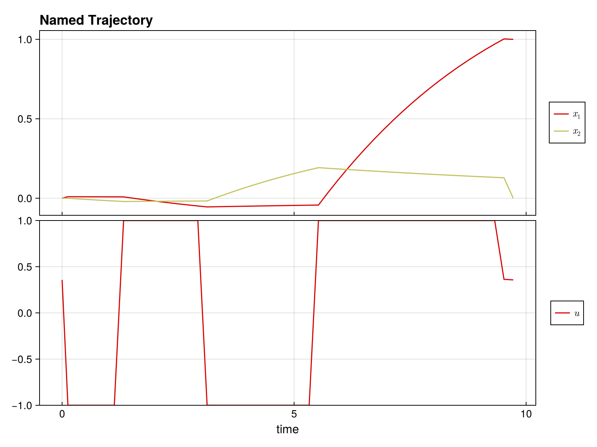

Quickstart Guide
Welcome to DirectTrajOpt.jl! This guide will get you up and running in minutes.
What is DirectTrajOpt?
DirectTrajOpt.jl solves trajectory optimization problems - finding optimal control sequences that drive a dynamical system from an initial state to a goal state while minimizing a cost function.
Installation
First, install the package:
using Pkg
Pkg.add("DirectTrajOpt")You'll also need NamedTrajectories.jl for defining trajectories:
using DirectTrajOpt
using NamedTrajectories
using LinearAlgebra
using CairoMakieA Minimal Example
Let's solve a simple problem: drive a 2D system from [0, 0] to [1, 0] with minimal control effort.
Step 1: Define the Trajectory
A trajectory contains your states, controls, and time information:
N = 50 # number of time steps
traj = NamedTrajectory(
(
x = randn(2, N), # 2D state
u = randn(1, N), # 1D control
Δt = fill(0.1, N), # time step
);
timestep = :Δt,
controls = :u,
initial = (x = [0.0, 0.0],),
final = (x = [1.0, 0.0],),
bounds = (Δt = (0.05, 0.2), u = 1.0),
)N = 50, (x = 1:2, u = 3:3, → Δt = 4:4)Step 2: Define the Dynamics
Specify how your system evolves. For bilinear dynamics ẋ = (G₀ + u₁G₁) x:
G_drift = [-0.1 1.0; -1.0 -0.1] # drift term
G_drives = [[0.0 1.0; 1.0 0.0]] # control term
G = u -> G_drift + sum(u .* G_drives)
integrator = BilinearIntegrator(G, :x, :u, traj)BilinearIntegrator: :x = exp(Δt G(:u)) :x (dim = 2)Step 3: Define the Objective
What do we want to minimize? Let's penalize control effort:
obj = QuadraticRegularizer(:u, traj, 1.0)QuadraticRegularizer on :u (R = [1.0], all)Step 4: Create and Solve
Combine everything into a problem and solve:
prob = DirectTrajOptProblem(traj, obj, integrator)DirectTrajOptProblem
Trajectory
Timesteps: 50
Duration: 4.9
Knot dim: 4
Variables: x (2), u (1), Δt (1)
Controls: u, Δt
Objective: QuadraticRegularizer on :u (R = [1.0], all)
Dynamics (1 integrators)
BilinearIntegrator: :x = exp(Δt G(:u)) :x (dim = 2)
Constraints (4 total: 2 equality, 2 bounds)
EqualityConstraint: "initial value of x"
EqualityConstraint: "final value of x"
BoundsConstraint: "bounds on Δt"
BoundsConstraint: "bounds on u"The problem summary shows the trajectory, objective, dynamics, and constraints:
probDirectTrajOptProblem
Trajectory
Timesteps: 50
Duration: 4.9
Knot dim: 4
Variables: x (2), u (1), Δt (1)
Controls: u, Δt
Objective: QuadraticRegularizer on :u (R = [1.0], all)
Dynamics (1 integrators)
BilinearIntegrator: :x = exp(Δt G(:u)) :x (dim = 2)
Constraints (4 total: 2 equality, 2 bounds)
EqualityConstraint: "initial value of x"
EqualityConstraint: "final value of x"
BoundsConstraint: "bounds on Δt"
BoundsConstraint: "bounds on u"solve!(prob; max_iter = 100, verbose = false)This is Ipopt version 3.14.19, running with linear solver MUMPS 5.9.0.
Number of nonzeros in equality constraint Jacobian...: 776
Number of nonzeros in inequality constraint Jacobian.: 0
Number of nonzeros in Lagrangian Hessian.............: 1254
Total number of variables............................: 196
variables with only lower bounds: 0
variables with lower and upper bounds: 100
variables with only upper bounds: 0
Total number of equality constraints.................: 98
Total number of inequality constraints...............: 0
inequality constraints with only lower bounds: 0
inequality constraints with lower and upper bounds: 0
inequality constraints with only upper bounds: 0
iter objective inf_pr inf_du lg(mu) ||d|| lg(rg) alpha_du alpha_pr ls
0 1.4068404e-01 3.92e+00 4.79e+267 0.0 0.00e+00 - 0.00e+00 0.00e+00 0
1 1.7835279e-01 3.91e+00 2.61e+259 -2.1 2.73e+267 - 1.94e-268 2.95e-268h 1
2 1.6066620e-01 3.91e+00 1.38e+00 -2.2 1.14e+259 - 4.96e-260 7.71e-260h 1
3 1.3072293e-01 2.34e+00 8.82e-01 -4.0 3.91e+00 - 3.05e-01 4.01e-01h 1
4 1.1924502e-01 2.27e+00 8.41e-01 -1.5 3.93e+00 - 4.59e-02 2.93e-02h 1
5 1.2214590e-01 1.31e+00 8.21e-01 -2.5 1.97e+00 - 2.36e-01 4.25e-01h 1
6 1.2289146e-01 1.24e+00 9.15e-01 -1.3 2.52e+00 - 2.41e-01 5.06e-02f 1
7 1.4709720e-01 9.02e-01 1.25e+00 -1.7 1.28e+00 - 7.67e-01 2.74e-01h 1
8 1.8230134e-01 5.17e-01 1.81e+00 -1.6 4.54e+00 - 2.98e-01 4.27e-01f 1
9 2.4386343e-01 2.54e-01 1.47e+00 -2.1 2.61e+00 - 2.17e-01 5.08e-01h 1
iter objective inf_pr inf_du lg(mu) ||d|| lg(rg) alpha_du alpha_pr ls
10 2.9175058e-01 1.64e-01 1.12e+00 -3.4 2.20e+00 - 3.27e-01 3.55e-01h 1
11 3.0173660e-01 1.38e-01 9.38e-01 -1.7 2.77e+00 - 2.53e-01 1.60e-01f 1
12 3.2428388e-01 1.17e-01 8.27e-01 -2.0 5.99e+00 - 1.49e-01 1.51e-01h 1
13 3.4217392e-01 1.11e-01 8.46e-01 -4.0 5.37e+00 - 1.97e-02 5.56e-02h 1
14 3.7675736e-01 9.65e-02 7.10e-01 -1.9 3.37e+00 - 3.36e-01 1.28e-01h 1
15 4.4467071e-01 8.05e-02 5.72e+00 -1.2 1.10e+00 0.0 6.32e-01 1.66e-01h 1
16 4.9370617e-01 6.75e-02 1.88e+01 -0.7 4.58e+00 - 9.28e-01 1.62e-01h 1
17 5.8124266e-01 5.30e-02 5.26e+01 -0.8 7.41e-01 - 9.69e-01 2.18e-01h 1
18 6.5120451e-01 4.66e-02 5.92e+01 -4.0 1.23e+01 -0.5 3.81e-02 1.22e-01h 1
19 7.0010437e-01 4.27e-02 2.84e+02 -0.4 1.25e+00 - 1.00e+00 8.35e-02h 1
iter objective inf_pr inf_du lg(mu) ||d|| lg(rg) alpha_du alpha_pr ls
20 8.1629593e-01 3.31e-02 1.19e+03 -0.5 1.85e+00 - 1.00e+00 2.31e-01h 1
21 8.2377364e-01 3.27e-02 1.13e+03 -4.0 1.01e+02 - 9.41e-03 1.00e-02h 1
22 8.2649664e-01 3.26e-02 2.81e+03 -4.0 5.38e+00 - 1.36e-02 3.84e-03h 1
23 8.4373060e-01 3.25e-02 7.72e+03 1.4 5.69e+01 - 4.81e-02 2.41e-03f 1
24 8.6324460e-01 3.24e-02 5.59e+05 1.6 6.69e+01 - 1.00e+00 2.02e-03f 1
25 8.6849302e-01 3.23e-02 2.01e+06 2.7 3.65e+01 - 2.75e-02 2.90e-03h 1
26r 8.6849302e-01 3.23e-02 9.97e+02 2.3 0.00e+00 - 0.00e+00 3.33e-07R 12
27r 8.5401855e-01 2.82e-02 1.26e+01 0.2 2.46e-01 - 9.88e-01 9.19e-01f 1
28 8.5285693e-01 2.82e-02 3.11e+223 -2.1 6.43e+220 - 3.24e-224 1.16e-223h 5
29 8.5144753e-01 2.82e-02 1.11e+00 -0.4 3.15e+222 - 3.00e-225 3.00e-225s334
iter objective inf_pr inf_du lg(mu) ||d|| lg(rg) alpha_du alpha_pr ls
30 8.5138784e-01 2.79e-02 1.20e+00 -1.1 2.00e+00 - 4.75e-03 9.40e-03f 1
31 8.2158022e-01 2.29e-02 8.18e+00 -2.2 7.99e-01 - 3.14e-01 1.78e-01f 1
32 8.3820606e-01 2.18e-02 8.05e+00 -1.8 1.84e+00 - 2.67e-02 4.84e-02h 1
33 8.4473745e-01 2.03e-02 3.99e+01 -2.3 1.89e+00 - 6.61e-02 6.94e-02h 1
34 8.6966407e-01 1.96e-02 4.71e+01 -4.0 2.04e+00 - 3.14e-02 3.60e-02h 1
35 8.5164537e-01 1.79e-02 4.34e+01 -1.2 2.25e+01 - 1.92e-01 8.68e-02f 1
36 8.6819690e-01 1.73e-02 5.24e+01 -4.0 2.79e+00 - 1.51e-02 3.24e-02h 1
37 8.6880831e-01 1.72e-02 5.22e+01 -1.4 2.73e+01 - 6.05e-02 4.18e-03h 1
38 8.7898353e-01 1.58e-02 1.03e+02 -4.0 2.08e+01 - 2.81e-03 8.16e-02h 1
39 8.8050403e-01 1.58e-02 1.05e+02 -1.9 9.59e+01 - 1.00e-02 2.84e-03f 1
iter objective inf_pr inf_du lg(mu) ||d|| lg(rg) alpha_du alpha_pr ls
40 8.9228067e-01 1.53e-02 1.06e+02 -4.0 3.04e+00 - 7.68e-04 3.19e-02h 1
41 8.9144009e-01 1.51e-02 1.05e+02 -1.7 2.09e+01 -0.1 6.62e-02 7.95e-03f 1
42 8.9193873e-01 1.51e-02 1.05e+02 -4.0 4.85e+01 - 7.97e-03 2.61e-04h 1
43 8.9358440e-01 1.47e-02 1.02e+02 -1.5 6.57e+01 - 1.82e-02 2.82e-02f 1
44 8.8796706e-01 1.47e-02 1.01e+02 0.0 7.73e+00 - 7.36e-02 4.60e-03f 1
45 8.9211432e-01 1.45e-02 1.00e+02 -4.0 2.65e+00 - 2.30e-02 1.06e-02h 1
46 8.8826265e-01 1.40e-02 1.58e+02 -0.7 1.26e+01 - 9.97e-01 3.64e-02f 1
47 8.9269088e-01 1.39e-02 1.69e+02 -4.0 1.44e+01 - 9.30e-03 6.47e-03h 1
48 8.9434116e-01 1.37e-02 2.38e+02 -0.1 1.67e+02 - 3.27e-02 1.05e-02h 1
49 9.0001119e-01 1.37e-02 2.42e+02 -4.0 1.00e+01 - 9.31e-04 5.37e-03h 1
iter objective inf_pr inf_du lg(mu) ||d|| lg(rg) alpha_du alpha_pr ls
50 9.1834055e-01 1.36e-02 9.10e+02 -0.9 2.25e+01 - 9.88e-02 5.93e-03h 1
51 9.3276974e-01 1.35e-02 1.70e+03 -4.0 9.18e+01 - 1.74e-02 3.91e-03h 1
52 9.4077744e-01 1.34e-02 1.85e+05 0.3 6.28e+00 - 1.00e+00 9.30e-03h 1
53 9.4394569e-01 1.34e-02 5.42e+07 1.1 3.81e+00 - 1.00e+00 3.23e-03h 1
54 9.4409594e-01 1.33e-02 4.25e+10 2.7 5.35e+00 - 1.00e+00 1.25e-03h 1
55 9.4408582e-01 7.36e-03 4.36e+08 0.6 4.18e-03 7.8 9.90e-01 1.00e+00h 1
56 9.4303685e-01 1.91e-03 2.82e+08 -4.0 6.47e-02 - 3.95e-01 1.00e+00h 1
57 9.4277588e-01 1.91e-03 2.51e+08 2.7 1.15e+01 - 1.22e-06 4.24e-04h 1
58 9.2713326e-01 1.81e-03 2.22e+08 2.7 1.11e+01 - 4.88e-04 5.08e-02f 1
59 9.2679753e-01 1.81e-03 2.62e+08 2.7 3.87e+01 - 1.34e-01 4.96e-04h 1
iter objective inf_pr inf_du lg(mu) ||d|| lg(rg) alpha_du alpha_pr ls
60r 9.2679753e-01 1.81e-03 9.61e+02 2.4 0.00e+00 - 0.00e+00 3.11e-07R 5
61r 9.1422527e-01 1.49e-03 9.15e+00 0.1 2.45e-01 - 9.90e-01 9.92e-01f 1
62 9.1331314e-01 1.48e-03 2.95e+01 -0.4 1.69e+00 - 4.37e-02 2.87e-03h 1
63 9.1855995e-01 1.42e-03 5.90e+02 -0.4 4.72e+01 - 5.74e-04 4.19e-02h 1
64 9.2467355e-01 1.41e-03 5.89e+02 -4.0 2.02e+00 - 1.27e-02 9.77e-03h 1
65 9.2796806e-01 1.38e-03 6.51e+02 0.2 6.84e+00 - 1.00e+00 2.16e-02f 1
66 9.2893464e-01 1.38e-03 3.44e+04 1.1 7.05e+00 - 9.65e-01 1.28e-03h 1
67 9.4417626e-01 1.34e-03 1.42e+06 1.5 1.13e+00 - 1.00e+00 2.39e-02h 1
68 9.4481284e-01 1.34e-03 1.52e+09 1.4 1.72e+00 - 1.00e+00 9.13e-04h 1
69r 9.4481284e-01 1.34e-03 9.91e+02 2.1 0.00e+00 - 0.00e+00 2.83e-07R 15
iter objective inf_pr inf_du lg(mu) ||d|| lg(rg) alpha_du alpha_pr ls
70r 9.1900010e-01 2.24e-03 9.01e+00 0.4 1.21e-01 - 9.91e-01 1.00e+00f 1
71r 9.2003660e-01 1.97e-03 1.07e+02 -4.0 5.51e-03 - 9.84e-01 7.13e-01f 1
72r 9.3909190e-01 2.22e-03 3.61e+02 -4.0 1.34e-02 - 7.47e-01 3.76e-01f 1
73r 6.6276221e-01 6.10e-02 6.06e+01 -1.1 1.55e+00 - 1.00e+00 8.35e-01f 1
74r 7.3415076e-01 3.04e-02 5.36e+01 -1.3 8.32e-01 - 4.67e-01 9.08e-01f 1
75r 7.7012736e-01 1.34e-02 6.13e-01 -1.4 2.83e-01 0.0 1.00e+00 1.00e+00f 1
76r 8.5693838e-01 1.13e-02 5.89e+01 -4.0 1.38e+00 -0.5 4.06e-01 7.50e-01f 1
77r 8.7031180e-01 1.09e-02 1.02e+00 -2.0 4.90e-01 -0.1 1.00e+00 1.00e+00f 1
78r 8.9010501e-01 1.05e-02 2.06e+01 -4.0 6.18e+00 -0.5 1.87e-01 1.03e-01f 1
79r 8.9660560e-01 1.04e-02 8.58e+00 -2.8 2.87e-01 -0.1 1.00e+00 1.29e-01f 1
iter objective inf_pr inf_du lg(mu) ||d|| lg(rg) alpha_du alpha_pr ls
80r 9.1981517e-01 1.00e-02 3.41e+00 -3.3 3.05e-01 - 1.00e+00 4.96e-01f 1
81r 9.4271320e-01 9.65e-03 2.06e-01 -4.0 1.67e-01 - 1.00e+00 9.43e-01f 1
82r 9.4407498e-01 9.64e-03 2.85e-05 -4.0 1.23e-02 - 1.00e+00 1.00e+00f 1
Number of Iterations....: 82
(scaled) (unscaled)
Objective...............: 9.4407652773085147e-09 9.4407652773085149e-01
Dual infeasibility......: 1.9998457818795938e-02 1.9998457818795939e+06
Constraint violation....: 9.6373195989353927e-03 9.6373195989353927e-03
Variable bound violation: 0.0000000000000000e+00 0.0000000000000000e+00
Complementarity.........: 1.0000093278183725e-04 1.0000093278183725e+04
Overall NLP error.......: 1.9998457818795938e-02 1.9998457818795939e+06
Number of objective function evaluations = 457
Number of objective gradient evaluations = 71
Number of equality constraint evaluations = 457
Number of inequality constraint evaluations = 0
Number of equality constraint Jacobian evaluations = 87
Number of inequality constraint Jacobian evaluations = 0
Number of Lagrangian Hessian evaluations = 83
Total seconds in IPOPT = 7.390
EXIT: Converged to a point of local infeasibility. Problem may be infeasible.Step 5: Access the Solution
Let's look at the results.
plot(prob.trajectory)
The optimized trajectory is stored in prob.trajectory:
println("Final state: ", prob.trajectory.x[:, end])
println("Control norm: ", norm(prob.trajectory.u))Final state: [1.0, 0.0]
Control norm: 6.8832430187772715What You Can Do
- Multiple objectives: Combine regularization, minimum time, terminal costs
- Flexible dynamics: Linear, bilinear, time-dependent systems
- Add constraints: Bounds, path constraints, custom nonlinear constraints
- Smooth controls: Penalize derivatives for smooth, implementable controls
- Free time: Optimize trajectory duration
This page was generated using Literate.jl.